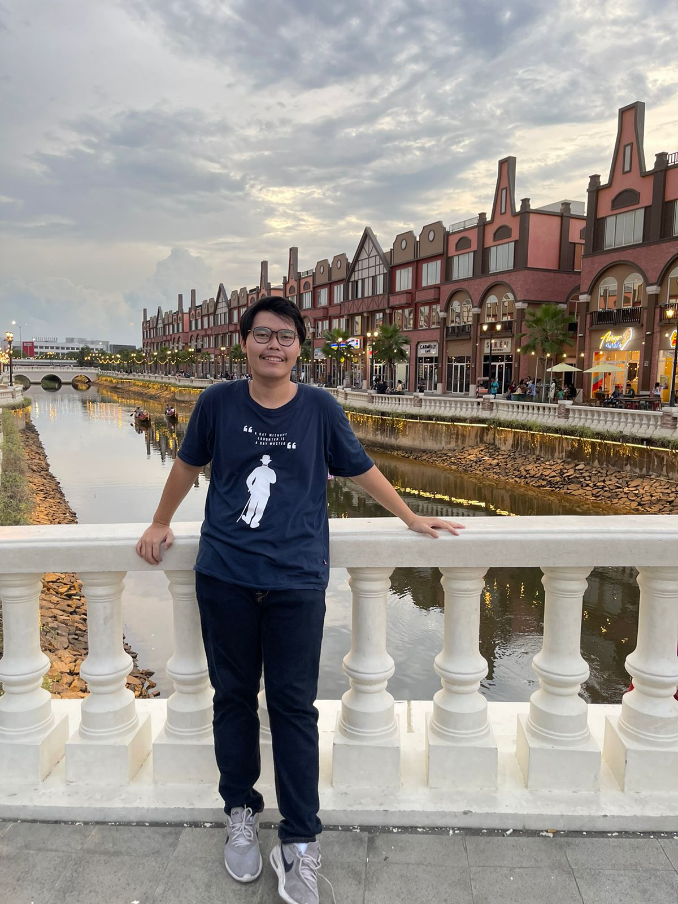
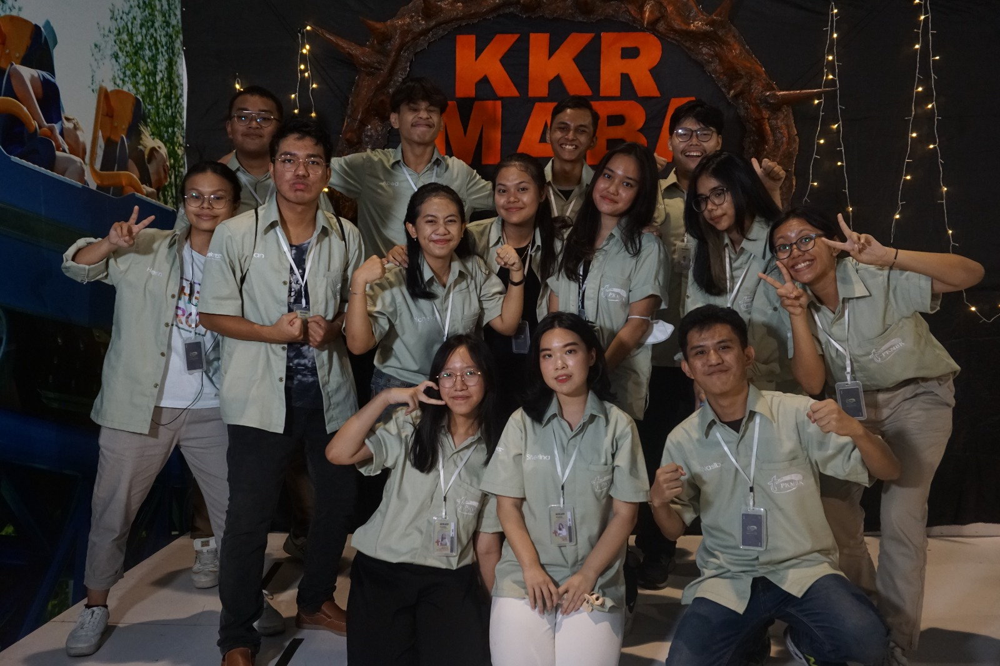

About Me

A second year informatics engineering major at Institut Teknologi Sepuluh Nopember Surabaya. I am a highly motivated individual seeking a challenging role where I can utilize my problem-solving and critical thinking skills to contribute to the success of the organization. Possess a creative mind and excel in a fast-paced, dynamic environment. Adept at teamwork and committed to delivering exceptional results. Seeking an opportunity as a backend engineer

Experience
Staff Member PKMBK-Pembinaan (May 2023 - Nov 2023)
As an active contributor, I played an integral role in both the planning and execution phases of various events, demonstrating my versatility and dedication to ensuring their success. Notably, I spearheaded the coordination efforts for the KKR MABA welcome party, where I worked closely with stakeholders to create a memorable experience for attendees, ensuring every detail was meticulously planned and executed flawlessly. Additionally, my commitment to social responsibility shone through during our CSR visits to care facilities, where I organized meaningful interactions and activities, fostering connections between our team and the residents while leaving a positive impact on the community. Furthermore, my involvement in the GPS Camp showcased my ability to thrive in dynamic environments, where I facilitated team-building exercises and workshops, fostering personal and professional growth among participants.
What I learned:
- Enhanced organizational and teamwork skills.
- Demonstrated commitment to Christian values and community engagement.
- Gained valuable insights into event planning and leadership.
Projects